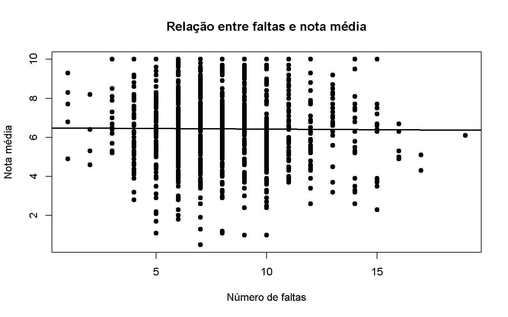
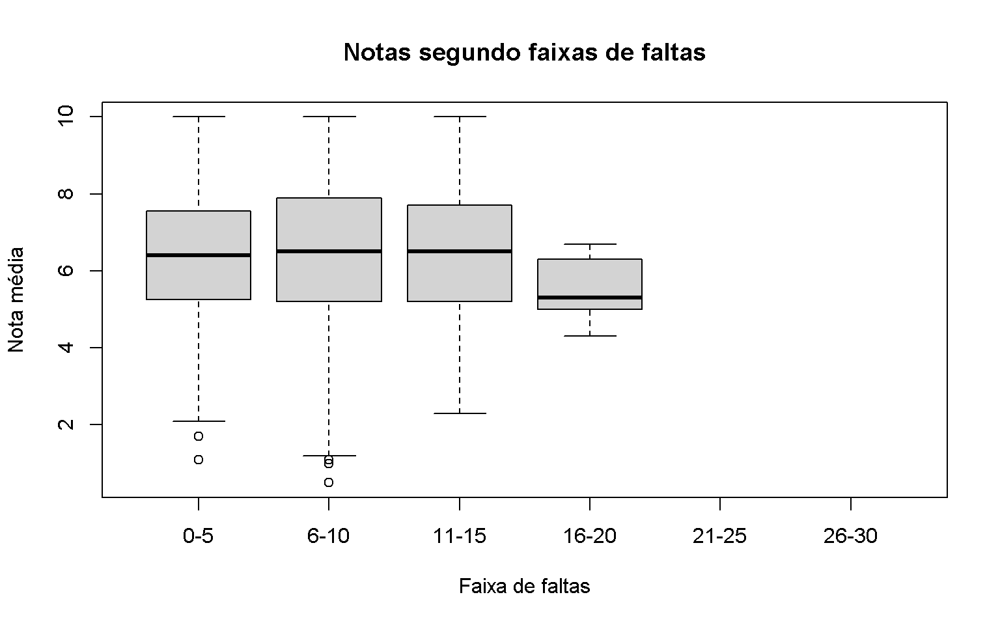
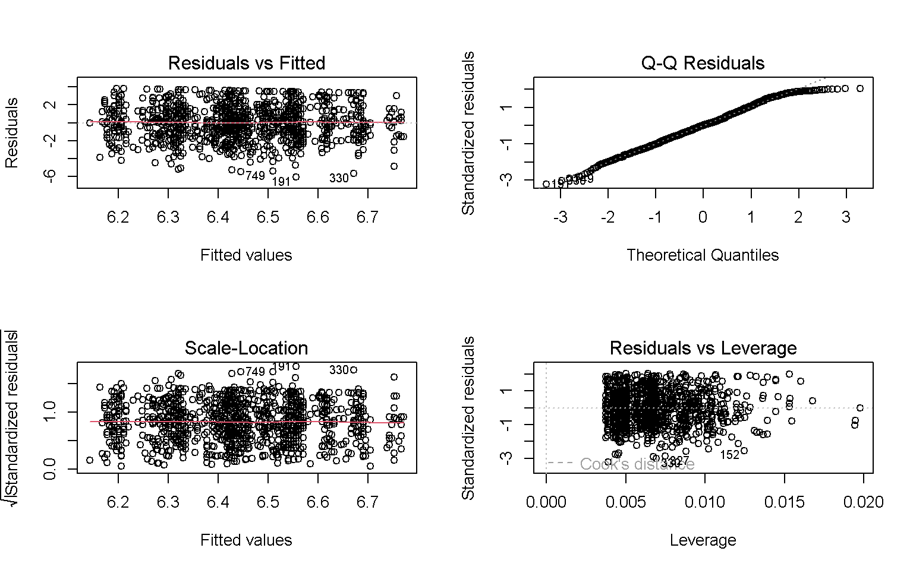

Este relatório apresenta uma análise estatística de um conjunto de dados que simula uma situação real de pesquisa em uma escola pública brasileira.
O banco de dados é composto por 1000 estudantes e contém cinco variáveis relacionadas ao contexto escolar e sociofamiliar: número de faltas, nota média, turno, escolaridade da mãe e acesso à internet.
O objetivo principal é aplicar técnicas de Estatística Descritiva, análise bivariada e análise multivariada, buscando identificar relações entre frequência escolar, desempenho acadêmico e características sociofamiliares.
O trabalho também busca demonstrar como a Estatística pode ser utilizada para investigar problemas educacionais e apoiar decisões pedagógicas.
1.1 Justificativa
A escolha do tema possui relevância social devido aos desafios enfrentados pela educação pública brasileira.
O tema também apresenta familiaridade para estudantes do PROFMAT, especialmente considerando que muitos atuam na educação básica.
O conjunto de dados apresenta variáveis quantitativas e qualitativas, permitindo a utilização de diferentes técnicas estatísticas.
Além disso, a análise possui aplicação prática, pois permite investigar possíveis fatores relacionados ao desempenho escolar dos estudantes.
2 2. Descrição das variáveis e importação dos dados
As variáveis utilizadas no estudo são:
Variável
Tipo
Escala
Valores/Categorias
faltas
Quantitativa discreta
Razão
0 a 30
nota_media
Quantitativa contínua
Razão
0 a 10
turno
Qualitativa nominal
Nominal
Matutino, Vespertino, Noturno
escolaridade_mae
Qualitativa ordinal
Ordinal
Fundamental, Médio, Superior
acesso_internet
Qualitativa nominal
Nominal
Sim, Não
A variável faltas representa a quantidade de faltas dos estudantes.
A variável nota_media representa o desempenho acadêmico.
A variável turno identifica o período em que o estudante frequenta a escola.
A variável escolaridade_mae representa o nível de escolaridade da mãe.
A variável acesso_internet indica se o estudante possui acesso à internet em casa.
O arquivo utilizado é dados_alunos.csv e deve estar na mesma pasta do arquivo index.Rmd.
if (!file.exists("dados_alunos.csv")) {stop("ERRO: o arquivo 'dados_alunos.csv' não foi encontrado. Coloque-o na mesma pasta do arquivo index.Rmd.")}dados_alunos <-read.table(file ="dados_alunos.csv",header =TRUE,sep =";",dec =".",stringsAsFactors =FALSE,check.names =FALSE)names(dados_alunos) <-trimws(names(dados_alunos))head(dados_alunos)
Antes das análises, as variáveis quantitativas serão convertidas explicitamente para o formato numérico.
Essa etapa é importante porque arquivos CSV podem fazer com que números sejam importados como texto. A conversão abaixo também permite corrigir valores que eventualmente estejam utilizando vírgula como separador decimal.
Welch Two Sample t-test
data: nota_media by acesso_internet
t = 0.41236, df = 549.34, p-value = 0.6802
alternative hypothesis: true difference in means between group Não and group Sim is not equal to 0
95 percent confidence interval:
-0.2035329 0.3116928
sample estimates:
mean in group Não mean in group Sim
6.481818 6.427738
6.1.1 Resposta da questão 1
media_nao <-mean( dados_q1$nota_media[ dados_q1$acesso_internet =="Não" ],na.rm =TRUE)media_sim <-mean( dados_q1$nota_media[ dados_q1$acesso_internet =="Sim" ],na.rm =TRUE)p_q1 <- teste_q1$p.valuecat("A média das notas dos estudantes sem acesso à internet foi ",round(media_nao, 2),", enquanto a média dos estudantes com acesso à internet foi ",round(media_sim, 2),". ")
A média das notas dos estudantes sem acesso à internet foi 6.48 , enquanto a média dos estudantes com acesso à internet foi 6.43 .
if (p_q1 <0.05) {cat("O teste t apresentou p-valor igual a ",format.pval(p_q1, digits =4),". Como esse valor é inferior a 0,05, existe evidência estatística de diferença significativa entre os dois grupos. Portanto, os dados indicam que o acesso à internet está associado a diferenças no desempenho acadêmico." )} else {cat("O teste t apresentou p-valor igual a ",format.pval(p_q1, digits =4),". Como esse valor é igual ou superior a 0,05, não existe evidência estatística suficiente para afirmar que as médias dos dois grupos sejam significativamente diferentes." )}
O teste t apresentou p-valor igual a 0.6802 . Como esse valor é igual ou superior a 0,05, não existe evidência estatística suficiente para afirmar que as médias dos dois grupos sejam significativamente diferentes.
7 7. Pergunta 2 – Escolaridade da mãe e desempenho
7.1 Como a escolaridade da mãe se relaciona com o desempenho dos estudantes?
As médias das notas serão comparadas de acordo com a escolaridade materna.
Df Sum Sq Mean Sq F value Pr(>F)
escolaridade_mae 2 11 5.478 1.547 0.213
Residuals 997 3529 3.540
Caso existam diferenças significativas, será realizado o teste de Tukey.
TukeyHSD(modelo_q2)
Tukey multiple comparisons of means
95% family-wise confidence level
Fit: aov(formula = nota_media ~ escolaridade_mae, data = dados_alunos)
$escolaridade_mae
diff lwr upr p adj
Médio-Fundamental 0.22542389 -0.07849356 0.5293413 0.1905070
Superior-Fundamental 0.07961125 -0.34452512 0.5037476 0.8985600
Superior-Médio -0.14581264 -0.56114671 0.2695214 0.6881799
7.1.1 Resposta da questão 2
p_q2 <-summary(modelo_q2)[[1]][["Pr(>F)"]][1]maior_mae <-as.character( media_mae$escolaridade_mae[which.max(media_mae$nota_media) ])menor_mae <-as.character( media_mae$escolaridade_mae[which.min(media_mae$nota_media) ])cat("A maior média de notas foi observada no grupo cuja mãe possui escolaridade ", maior_mae,", enquanto a menor média foi observada no grupo cuja mãe possui escolaridade ", menor_mae,". ")
A maior média de notas foi observada no grupo cuja mãe possui escolaridade Médio , enquanto a menor média foi observada no grupo cuja mãe possui escolaridade Fundamental .
if (p_q2 <0.05) {cat("A ANOVA apresentou p-valor de ",format.pval(p_q2, digits =4),". Portanto, existem diferenças estatisticamente significativas entre pelo menos dois níveis de escolaridade materna." )} else {cat("A ANOVA apresentou p-valor de ",format.pval(p_q2, digits =4),". Portanto, não há evidência estatística suficiente para afirmar que as médias sejam diferentes entre os níveis de escolaridade materna." )}
A ANOVA apresentou p-valor de 0.2133 . Portanto, não há evidência estatística suficiente para afirmar que as médias sejam diferentes entre os níveis de escolaridade materna.
8 8. Pergunta 3 – Faltas e desempenho
8.1 Qual é a correlação entre faltas e nota média?
Será calculado o coeficiente de correlação de Pearson.
Pearson's product-moment correlation
data: dados_q3$faltas and dados_q3$nota_media
t = -0.31796, df = 998, p-value = 0.7506
alternative hypothesis: true correlation is not equal to 0
95 percent confidence interval:
-0.07201234 0.05196132
sample estimates:
cor
-0.01006418
8.2 Gráfico de dispersão
plot( dados_q3$faltas, dados_q3$nota_media,main ="Relação entre faltas e nota média",xlab ="Número de faltas",ylab ="Nota média",pch =19)abline(lm( nota_media ~ faltas,data = dados_q3 ),lwd =2)

8.2.1 Resposta da questão 3
r_q3 <-cor( dados_q3$faltas, dados_q3$nota_media)p_q3 <- teste_q3$p.valuecat("O coeficiente de correlação de Pearson foi ",round(r_q3, 3),". ")
O coeficiente de correlação de Pearson foi -0.01 .
if (r_q3 <0) {cat("A correlação é negativa, indicando tendência de que estudantes com maior número de faltas apresentem menores notas médias. " )} elseif (r_q3 >0) {cat("A correlação é positiva, indicando tendência de aumento das notas junto com o número de faltas. " )} else {cat("O coeficiente indica ausência de relação linear entre as variáveis. " )}
A correlação é negativa, indicando tendência de que estudantes com maior número de faltas apresentem menores notas médias.
if (abs(r_q3) <0.3) {cat("A intensidade da relação linear é fraca. ")} elseif (abs(r_q3) <0.7) {cat("A intensidade da relação linear é moderada. ")} else {cat("A intensidade da relação linear é forte. ")}
A intensidade da relação linear é fraca.
if (p_q3 <0.05) {cat("Como o p-valor foi ",format.pval(p_q3, digits =4),", a associação linear é estatisticamente significativa." )} else {cat("Como o p-valor foi ",format.pval(p_q3, digits =4),", não há evidência estatística suficiente de associação linear significativa." )}
Como o p-valor foi 0.7506 , não há evidência estatística suficiente de associação linear significativa.
8.3 Existe uma faixa crítica de faltas?
Para complementar a análise, os estudantes serão divididos em faixas de faltas.
boxplot( nota_media ~ faixa_faltas,data = dados_alunos,main ="Notas segundo faixas de faltas",xlab ="Faixa de faltas",ylab ="Nota média")

diferencas <-diff( media_faixas$nota_media)indice <-which.min( diferencas)if (length(indice) >0&&!is.na(diferencas[indice])) {cat("A maior redução consecutiva das médias ocorreu entre as faixas ",as.character(media_faixas$faixa_faltas[indice])," e ",as.character(media_faixas$faixa_faltas[indice +1]),". Essa faixa representa um possível ponto de atenção para acompanhamento da frequência escolar." )} else {cat("Não foi possível identificar uma faixa crítica com base nas médias consecutivas." )}
A maior redução consecutiva das médias ocorreu entre as faixas 11-15 e 16-20 . Essa faixa representa um possível ponto de atenção para acompanhamento da frequência escolar.
9 9. Pergunta 4 – Turno, faltas e desempenho
9.1 Estudantes do turno noturno apresentam mais faltas?
Primeiramente serão comparadas as médias de faltas entre os turnos.
Df Sum Sq Mean Sq F value Pr(>F)
turno 2 8 4.051 1.144 0.319
Residuals 997 3532 3.543
9.1.1 Resposta da questão 4
turno_maior_falta <-as.character( media_faltas_turno$turno[which.max(media_faltas_turno$faltas) ])maior_falta <-max( media_faltas_turno$faltas,na.rm =TRUE)turno_maior_nota <-as.character( media_notas_turno$turno[which.max(media_notas_turno$nota_media) ])maior_nota <-max( media_notas_turno$nota_media,na.rm =TRUE)turno_menor_nota <-as.character( media_notas_turno$turno[which.min(media_notas_turno$nota_media) ])menor_nota <-min( media_notas_turno$nota_media,na.rm =TRUE)p_faltas_turno <-summary( modelo_q4_faltas)[[1]][["Pr(>F)"]][1]p_notas_turno <-summary( modelo_q4_notas)[[1]][["Pr(>F)"]][1]cat("O turno que apresentou a maior média de faltas foi o ", turno_maior_falta,", com aproximadamente ",round(maior_falta, 2)," faltas por estudante. ")
O turno que apresentou a maior média de faltas foi o Matutino , com aproximadamente 8.03 faltas por estudante.
if (p_faltas_turno <0.05) {cat("A diferença entre os turnos quanto às faltas foi estatisticamente significativa. " )} else {cat("A diferença entre os turnos quanto às faltas não foi estatisticamente significativa. " )}
A diferença entre os turnos quanto às faltas não foi estatisticamente significativa.
cat("Quanto ao desempenho, a maior média de notas foi observada no turno ", turno_maior_nota,", com média de ",round(maior_nota, 2),", enquanto a menor foi observada no turno ", turno_menor_nota,", com média de ",round(menor_nota, 2),". ")
Quanto ao desempenho, a maior média de notas foi observada no turno Noturno , com média de 6.58 , enquanto a menor foi observada no turno Vespertino , com média de 6.34 .
if (p_notas_turno <0.05) {cat("A ANOVA indica diferença estatisticamente significativa entre os turnos quanto às notas." )} else {cat("A ANOVA não indica diferença estatisticamente significativa entre os turnos quanto às notas." )}
A ANOVA não indica diferença estatisticamente significativa entre os turnos quanto às notas.
10 10. Pergunta 5 – Fatores sociofamiliares e desempenho
10.1 As variáveis sociofamiliares explicam parte da variabilidade das notas?
Nesta etapa serão consideradas conjuntamente a escolaridade da mãe e o acesso à internet.
Call:
lm(formula = nota_media ~ escolaridade_mae + acesso_internet,
data = dados_q5)
Residuals:
Min 1Q Median 3Q Max
-6.0363 -1.2363 -0.0047 1.3269 3.6917
Coefficients:
Estimate Std. Error t value Pr(>|t|)
(Intercept) 6.47485 0.11236 57.626 <0.0000000000000002 ***
escolaridade_mae.L 0.05459 0.12787 0.427 0.670
escolaridade_mae.Q -0.15462 0.10310 -1.500 0.134
acesso_internetSim -0.06478 0.13049 -0.496 0.620
---
Signif. codes: 0 '***' 0.001 '**' 0.01 '*' 0.05 '.' 0.1 ' ' 1
Residual standard error: 1.882 on 996 degrees of freedom
Multiple R-squared: 0.003341, Adjusted R-squared: 0.0003393
F-statistic: 1.113 on 3 and 996 DF, p-value: 0.3428
O coeficiente de determinação será calculado.
r2_q5 <-summary( modelo_q5)$r.squaredr2_q5
[1] 0.003341252
10.1.1 Resposta da questão 5
cat("O modelo estatístico apresentou R² igual a ",round(r2_q5, 3),". Isso significa que aproximadamente ",round(r2_q5 *100, 2),"% da variabilidade observada nas notas é explicada conjuntamente pela escolaridade da mãe e pelo acesso à internet dentro deste modelo.")
O modelo estatístico apresentou R² igual a 0.003 . Isso significa que aproximadamente 0.33 % da variabilidade observada nas notas é explicada conjuntamente pela escolaridade da mãe e pelo acesso à internet dentro deste modelo.
É importante destacar que associação estatística não significa necessariamente causalidade.
As variáveis sociofamiliares podem estar relacionadas ao desempenho, mas outros fatores também podem influenciar as notas dos estudantes.
11 11. Pergunta 6 – Turno e internet conjuntamente
11.1 Que padrões aparecem quando turno e acesso à internet são analisados simultaneamente?
Nesta etapa será calculada a média das notas para cada combinação de turno e acesso à internet.
Call:
lm(formula = nota_media ~ turno * acesso_internet, data = dados_alunos)
Residuals:
Min 1Q Median 3Q Max
-5.9280 -1.2280 0.0034 1.3034 3.7944
Coefficients:
Estimate Std. Error t value
(Intercept) 6.5414 0.1632 40.076
turnoVespertino -0.3357 0.2445 -1.373
turnoNoturno 0.3201 0.2980 1.074
acesso_internetSim -0.1134 0.1944 -0.583
turnoVespertino:acesso_internetSim 0.3044 0.2929 1.039
turnoNoturno:acesso_internetSim -0.2705 0.3522 -0.768
Pr(>|t|)
(Intercept) <0.0000000000000002 ***
turnoVespertino 0.170
turnoNoturno 0.283
acesso_internetSim 0.560
turnoVespertino:acesso_internetSim 0.299
turnoNoturno:acesso_internetSim 0.443
---
Signif. codes: 0 '***' 0.001 '**' 0.01 '*' 0.05 '.' 0.1 ' ' 1
Residual standard error: 1.882 on 994 degrees of freedom
Multiple R-squared: 0.0051, Adjusted R-squared: 9.505e-05
F-statistic: 1.019 on 5 and 994 DF, p-value: 0.405
anova(modelo_q6)
Analysis of Variance Table
Response: nota_media
Df Sum Sq Mean Sq F value Pr(>F)
turno 2 8.1 4.0512 1.1433 0.3192
acesso_internet 1 0.7 0.7246 0.2045 0.6512
turno:acesso_internet 2 9.2 4.6131 1.3019 0.2725
Residuals 994 3522.1 3.5433
11.2.1 Resposta da questão 6
indice_maior <-which.max( media_turno_internet$nota_media)indice_menor <-which.min( media_turno_internet$nota_media)cat("O grupo com maior média de notas foi o grupo do turno ",as.character( media_turno_internet$turno[indice_maior] )," com acesso à internet ",as.character( media_turno_internet$acesso_internet[indice_maior] ),", apresentando média de ",round( media_turno_internet$nota_media[indice_maior],2 ),". ")
O grupo com maior média de notas foi o grupo do turno Noturno com acesso à internet Não , apresentando média de 6.86 .
cat("O grupo com menor média foi o grupo do turno ",as.character( media_turno_internet$turno[indice_menor] )," com acesso à internet ",as.character( media_turno_internet$acesso_internet[indice_menor] ),", apresentando média de ",round( media_turno_internet$nota_media[indice_menor],2 ),".")
O grupo com menor média foi o grupo do turno Vespertino com acesso à internet Não , apresentando média de 6.21 .
12 12. Análise multivariada
Além das análises anteriores, será utilizada uma tabela de contingência tridimensional envolvendo turno, acesso à internet e faixa de faltas.
turno escolaridade_mae acesso_internet nota_media
1 Matutino Fundamental Não 6.071429
2 Vespertino Fundamental Não 6.397778
3 Noturno Fundamental Não 6.781481
4 Matutino Médio Não 6.866667
5 Vespertino Médio Não 6.081818
6 Noturno Médio Não 6.582609
7 Matutino Superior Não 6.707407
8 Vespertino Superior Não 6.027778
9 Noturno Superior Não 8.085714
10 Matutino Fundamental Sim 6.405882
11 Vespertino Fundamental Sim 6.266667
12 Noturno Fundamental Sim 6.225000
13 Matutino Médio Sim 6.490000
14 Vespertino Médio Sim 6.569027
15 Noturno Médio Sim 6.694444
16 Matutino Superior Sim 6.291837
17 Vespertino Superior Sim 6.181579
18 Noturno Superior Sim 6.527273
Essa análise permite observar combinações de características que podem estar associadas a diferentes níveis de desempenho.
13 13. Modelo estatístico completo e interpretação geral
Para ampliar a investigação, será ajustado um modelo considerando simultaneamente faltas, turno, escolaridade da mãe e acesso à internet.
Call:
lm(formula = nota_media ~ faltas + turno + escolaridade_mae +
acesso_internet, data = dados_completos)
Residuals:
Min 1Q Median 3Q Max
-6.0557 -1.2593 0.0225 1.3112 3.8040
Coefficients:
Estimate Std. Error t value Pr(>|t|)
(Intercept) 6.534384 0.209824 31.142 <0.0000000000000002 ***
faltas -0.004847 0.021347 -0.227 0.820
turnoVespertino -0.123596 0.134681 -0.918 0.359
turnoNoturno 0.130076 0.159518 0.815 0.415
escolaridade_mae.L 0.067139 0.128508 0.522 0.601
escolaridade_mae.Q -0.150025 0.103194 -1.454 0.146
acesso_internetSim -0.067265 0.130863 -0.514 0.607
---
Signif. codes: 0 '***' 0.001 '**' 0.01 '*' 0.05 '.' 0.1 ' ' 1
Residual standard error: 1.883 on 993 degrees of freedom
Multiple R-squared: 0.00578, Adjusted R-squared: -0.0002277
F-statistic: 0.9621 on 6 and 993 DF, p-value: 0.4497
13.1 Diagnóstico do modelo
par(mfrow =c(2, 2))plot(modelo_completo)

par(mfrow =c(1, 1))
O modelo completo permite observar o comportamento conjunto das principais variáveis disponíveis no banco de dados.
Entretanto, os resultados devem ser interpretados com cautela, pois o conjunto de dados possui apenas cinco variáveis e representa uma situação simulada.
14 14. Síntese dos resultados, recomendações e limitações
14.1 Síntese
A análise realizada permitiu investigar seis questões relacionadas ao desempenho escolar.
A primeira questão verificou a possível relação entre acesso à internet e nota média.
A segunda investigou a relação entre escolaridade materna e desempenho.
A terceira analisou a associação entre faltas e notas, incluindo a procura por uma possível faixa crítica de faltas.
A quarta comparou os turnos quanto ao número de faltas e ao desempenho acadêmico.
A quinta avaliou, por meio de regressão linear, quanto da variabilidade das notas pode ser explicada conjuntamente pelas variáveis sociofamiliares.
A sexta analisou conjuntamente turno e acesso à internet.
14.2 Recomendações
Com base na metodologia empregada, recomenda-se que a escola acompanhe estudantes que apresentam elevada quantidade de faltas.
Também é importante desenvolver ações de recuperação da aprendizagem para estudantes com baixa frequência.
O acesso à internet deve ser considerado nas políticas de inclusão digital e educacional.
A escola pode utilizar informações estatísticas para identificar grupos que necessitam de acompanhamento pedagógico mais próximo.
Os resultados estatísticos, entretanto, devem servir como instrumentos de apoio e não como mecanismos de classificação ou rotulação dos estudantes.
14.3 Limitações
O banco de dados utilizado é simulado e, portanto, os resultados não representam necessariamente uma escola pública específica.
Outra limitação está relacionada ao número de variáveis disponíveis.
O desempenho escolar pode sofrer influência de diversos fatores que não estão presentes no banco de dados, como renda familiar, participação dos responsáveis, condições de transporte, infraestrutura escolar, tempo de estudo, motivação, histórico escolar e características individuais.
Além disso, associação estatística não significa necessariamente relação de causa e efeito.
14.4 Pesquisas futuras
Pesquisas futuras poderiam incluir novas variáveis, como:
renda familiar;
horas de estudo;
histórico de reprovação;
participação familiar;
acesso a computador;
distância entre residência e escola;
situação de trabalho;
desempenho anterior;
participação em projetos escolares.
Também seria interessante acompanhar os estudantes ao longo de vários períodos letivos, permitindo a realização de estudos longitudinais.
15 15. Conclusão
O presente relatório demonstrou a aplicação de diferentes técnicas estatísticas na análise de um conjunto de dados educacionais.
A Estatística Descritiva permitiu conhecer as características gerais dos estudantes.
As análises bivariadas possibilitaram investigar relações entre frequência, desempenho, turno, escolaridade materna e acesso à internet.
A análise multivariada permitiu observar conjuntamente diferentes características dos estudantes.
Os gráficos facilitaram a visualização dos padrões existentes nos dados, enquanto os testes estatísticos permitiram avaliar se determinadas diferenças observadas possuem evidência estatística.
De maneira geral, o trabalho demonstra que a Estatística pode ser uma importante ferramenta para a compreensão de fenômenos educacionais e para o planejamento de ações pedagógicas.
É fundamental, entretanto, interpretar os resultados considerando as limitações do banco de dados e evitando conclusões causais que não possam ser sustentadas pelos métodos utilizados.
Assim, a análise estatística deve ser entendida como uma ferramenta de apoio à investigação e à tomada de decisões, contribuindo para uma compreensão mais objetiva e fundamentada da realidade escolar.
15.1 Ambiente utilizado
sessionInfo()
R version 4.6.1 (2026-06-24 ucrt)
Platform: x86_64-w64-mingw32/x64
Running under: Windows 11 x64 (build 26200)
Matrix products: default
LAPACK version 3.12.1
locale:
[1] LC_COLLATE=Portuguese_Brazil.utf8 LC_CTYPE=Portuguese_Brazil.utf8
[3] LC_MONETARY=Portuguese_Brazil.utf8 LC_NUMERIC=C
[5] LC_TIME=Portuguese_Brazil.utf8
time zone: America/Sao_Paulo
tzcode source: internal
attached base packages:
[1] stats graphics grDevices utils datasets methods base
loaded via a namespace (and not attached):
[1] compiler_4.6.1 fastmap_1.2.0 cli_3.6.6 tools_4.6.1
[5] htmltools_0.5.9 rstudioapi_0.19.0 yaml_2.3.12 rmarkdown_2.31
[9] knitr_1.51 jsonlite_2.0.0 xfun_0.60 digest_0.6.39
[13] rlang_1.3.0 evaluate_1.0.5
16 Referências
BEN DÊIVIDE. Probabilidade e Estatística – PROFMAT/CA/UFSJ: Ensino normal 2026.2. Universidade Federal de São João del-Rei (UFSJ), 2026. Disponível em: https://bendeivide.github.io/courses/profmat-probest/normal2026.2/. Acesso em: 01 set. 2026. :contentReferenceoaicite:0
OPENAI. ChatGPT. 2026. Ferramenta de inteligência artificial utilizada como apoio à elaboração, organização e revisão do relatório. Disponível em: https://chatgpt.com/. Acesso em: 01 set. 2026. :contentReferenceoaicite:1